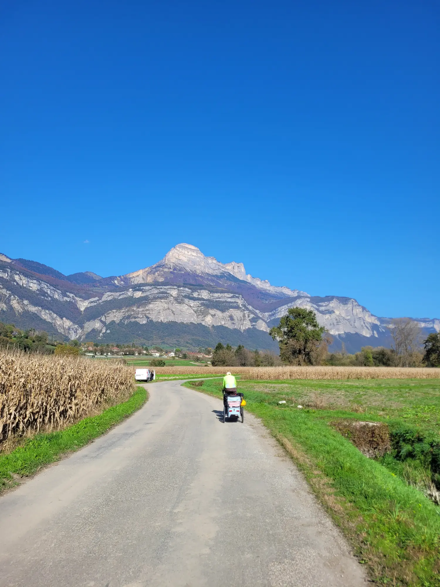

Balades et cours de vélo à Grenoble
Avec Cassandre, pour tous les âges et à votre rythme.
Ce que je propose
Des sorties en petit groupe et des cours adaptés à chacun, sur les plus belles voies vertes autour de Grenoble.

Balades guidées
De deux heures à la journée, pour découvrir Grenoble, la Belle Via et les massifs autour.
Voir les baladesCours pour enfants
Trouver l'équilibre, apprendre à freiner, puis rouler en sécurité, en jouant.
Voir les cours
Seniors et mobilité réduite
Reprendre le vélo en douceur, essayer l'électrique ou un vélo adapté.
Voir l'accompagnement
Bonjour, je suis Cassandre
Je me forme pour devenir monitrice vélo à Grenoble. Avec ma famille, nous avons voyagé à vélo en Corée du Sud, au Japon, en Italie, et sur la Belle Via jusqu'au Vercors.
J'ai envie de partager ce plaisir simple : rouler à son rythme, voir le paysage changer, et rentrer avec le sourire. Que vous ayez 6 ou 80 ans, on trouvera la sortie qui vous va.
Cassandre
Quelques souvenirs
Notre semaine à vélo sur la Belle Via et dans le Vercors. Lire le récit sur The Quiet Adventure
On roule ensemble ?
Dites-moi qui vous êtes et ce dont vous avez envie. Je vous réponds pour organiser la sortie ou le cours.